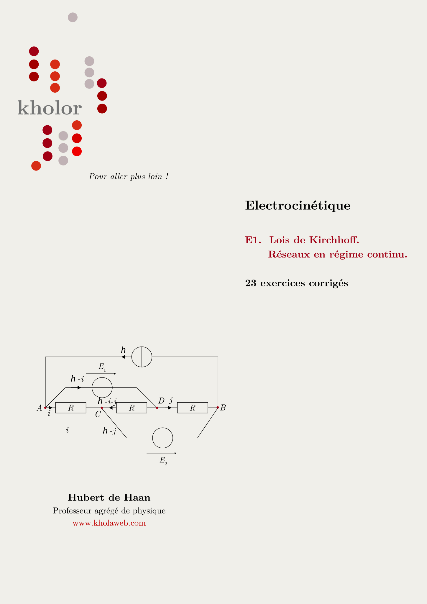

Lois de Kirchhoff. Réseaux en régime continu
Électricité · même chapitre que E1 · 23 exercices inédits
Vingt-trois exercices sur l'analyse des réseaux en régime continu, de la mise en équation jusqu'à la résolution des systèmes d'équations indépendantes. Aucun ne figure parmi les neuf que tu peux lire ici : ce sont d'autres énoncés, sur le même chapitre, tous corrigés en détail.
Quelques pages du recueil — ouvrir l'extrait en PDF